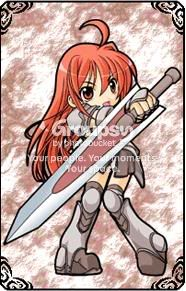

หน้า 133 จากทั้งหมด 241

โพสต์แล้ว:
อังคาร 24 มี.ค. 2009 6:03 pmโดย ECO
น่าร้อนไปเที้ยวทะเลกันเถอะไหนๆก็ไม่มีประเด็นใหม่แล้ว
โพสต์แล้ว:
อังคาร 24 มี.ค. 2009 8:26 pmโดย ECO
นั่นสินะครับความโรแมนติคของหน้าร้อนก็คือทะเล !!

โพสต์แล้ว:
อังคาร 24 มี.ค. 2009 9:31 pmโดย ECO
โพสต์แล้ว:
พฤหัสฯ. 26 มี.ค. 2009 9:14 amโดย ECO

/me ถอนสมอเรื่อ ติดปาป้าที่ท้ายเรือ
ออกเดินทาง!!!!!!
โพสต์แล้ว:
ศุกร์ 27 มี.ค. 2009 1:08 amโดย ECO
ขอถามนิดนึงนะครับพอดีมันมีหลายหน้าเหลือเกิน
อยากทราบว่าอัพagiเท่าไหร่ถึงจะเหมาะสมที่สุด คือประมาณว่า กด sdc แล้วaspd ถือว่าที่สุดแล้ว อัพมากไปกว่านั้นไม่มีผลอะไร
แล้วคิดว่าอัพ agi เท่าไหร่ถึงเหมาะสม ไม่มากแล้วก็ไม่น้อยเกินไป ค่าอยู่ที่เท่าไหร่
รบกวนขอความคิดเห็นทีนะครับ
ขอบคุณ
จากมือใหม่
โพสต์แล้ว:
ศุกร์ 27 มี.ค. 2009 7:29 amโดย ECO
akadej เขียน:ขอถามนิดนึงนะครับพอดีมันมีหลายหน้าเหลือเกิน
อยากทราบว่าอัพagiเท่าไหร่ถึงจะเหมาะสมที่สุด คือประมาณว่า กด sdc แล้วaspd ถือว่าที่สุดแล้ว อัพมากไปกว่านั้นไม่มีผลอะไร
แล้วคิดว่าอัพ agi เท่าไหร่ถึงเหมาะสม ไม่มากแล้วก็ไม่น้อยเกินไป ค่าอยู่ที่เท่าไหร่
รบกวนขอความคิดเห็นทีนะครับ
ขอบคุณ
จากมือใหม่
ดูที่Aspd อ่ะ มันสุดที่800ต่อให้อัพเอจิสุดก็เหอะ (ไม่นับบัพสปีดของเอเล)เวลาใช้Sdc มันจะไม่แสดงค่าAspd ในสเตตัส
ส่วนการอัพเอจิที่เหมาะสมนั้นเเล้วแต่คุณชอบจริงๆ แต่ถ้าอยากหลบแบบบ้าคลั่งละก้อ เเนะนำ อัพไปที่99 เพราะที่เลเวล99/50 จะลงตัวที่ 99+16(ใส่เท้าเอจิ+2)=99+18 พอดี S.Aviod 415 (ถ้าจำไม่ผิดนะ)
แต่ถ้าถามว่าอัพแค่เหมาะสม ก็ให้ดูค่าAspdถึง 800 ก็พอเเล้วครับ
โพสต์แล้ว:
ศุกร์ 27 มี.ค. 2009 12:57 pmโดย ECO
ถ้าอับสุด
S avoid 360-370
ถ้าไม่มี+อะไรอีก
agiรวม 108 จะได้AT speedเต็ม800
ลงทะเลต่อและ
โพสต์แล้ว:
ศุกร์ 27 มี.ค. 2009 2:06 pmโดย ECO
แปะรูปมั่ง




Credit : Akibakko (ละมั้งจำไม่ได้แล้วว่าไปหามาจากไหนแต่คงใช่มั้ง)
โพสต์แล้ว:
ศุกร์ 27 มี.ค. 2009 5:39 pmโดย ECO
น่าจะใช้ต่อได้ไม่เคยลองเหมือนกัน
ดันตะวันออกหรือดันใต้ถ้ารวยหน่อยก็ตีหนามบนหอแสง
โพสต์แล้ว:
เสาร์ 28 มี.ค. 2009 2:50 pmโดย ECO
Crescent01 เขียน:อยากรุ้ว่า
ท่าฟันเผ่า (นก,ปลา และบลาๆๆ)ของBM
สามารถใช้ต่อจากIAI COMBO ของBH ได้หรือเปล่า
- สามารถกดต่อจาก IAI2 ของคลาส Swordman ได้งิ แต่ไม่สามารถก่ดต่อจาก IAI COMBO ของ BH ได้ 
และก็อยากรู้ที่เก็บเลเวลของBlade lv50+
สำหรับสายSTR เพราะไม่รุ้จะไปเก็บไหนดี
เลยอยู่มันแต่ชินนาม่อนนั่นแหละ-3-
- ลองดันใต้ชั้นแรก ไม่ก็เปิดดัน 40 ลงไปเปรี้ยวดูงิ แล้วพอซัก 60 ก็มาเปรี้ยวหนามทองปล.ไอคอนแสดงอารมณ์ทำไมมีเนโกะไม่ครบทุกตัววววว~
โพสต์แล้ว:
อาทิตย์ 29 มี.ค. 2009 1:27 amโดย ECO
ขอโทษที่ถามอะไรโง่ๆหน่อยนะครับ พอดีผมไม่ได้เล่นมาปีกว่า พึ่งจะกลับมาเล่น
ดันเลเวล70ที่ว่ากัน มันไปยังไงครับ แล้วถ้าคนในปาตี้ผมเลเวลไม่ถึง70จะสามารถไปด้วยได้รึป่าว
ขอแบบละเอียดก็ดีครับ ข้อมูลเยอะมากผมหาไม่เจอ มึนไปหมด แล้วที่ว่า aspd 800 นี่มัน agi เท่าไหร่อะครับ 800 นี่กด sdcด้วยรึป่าว พอดีผมไม่รู้จิงๆ รบกวนทีนะครับ
ขอบคุณครับ
โพสต์แล้ว:
อาทิตย์ 29 มี.ค. 2009 9:11 amโดย ECO
อีกอย่างนะครับ ถ้าเราเลเวล99/50/50 สามารถเปลี่ยนจ๊อบไปๆมาๆโดยที่จ๊อบจะลดอีกรึเปล่าครับ
แล้วเรื่อง boost มันดรอปจากบอสทุกตัวไหม และถ้าเราเลเวลสูงกว่าบอสมากๆเกินกี่เลเวลมีผลกับการดรอปของไอเทมรึเปล่า
เช่น ถ้าบอสเลเวล20 แต่เราเลเวล99 boost จะดรอปหรือเปล่า
ขอบคุณล่วงหน้าสำหรับคำตอบครับ
โพสต์แล้ว:
อาทิตย์ 29 มี.ค. 2009 12:32 pmโดย ECO
agi 108 จะได้ ATspeed800
วิธีเข้าดัน70 ต้องทำเควสอย่างน้อย10ครั้ง แล้วคุยกับทหารหน้าลานประลอง
แล้วคุยกับทหารตรงกลางเลือกเควสปาตี้เวล70ในการเปิด
(ทหารกลางลานมี2คน คนนึงเปิดดันซากโปราณอีกคนทำเควสรับEP)
ส่วนเรื่องบูสบอสที่ดรอบมี6ตัว
บอสหมีในเหมืองหน้าม็อก
บอสปลาในดันแถวๆแมบฝึกสัตว์ตะวันออก
บอสไทนี้ในดันนน้ำแข็ง
บอสไพ่ในดันเหนือ
บอสหมาดำใช้ปราชสัตว์ด้วย
บอสเสือในป่ากลางวันเกาะไมไมใช้ปราชสัตว์ด้วย
ส่วนเรื่อดรอปของถ้าเวลสูงกว่าบอสมากๆบอสจะไม่ดรอปของที่ดรอปเป็นปาตี้
ส่วนของอย่างอื่นดรอปเป็นปรกติ
โพสต์แล้ว:
อาทิตย์ 29 มี.ค. 2009 12:33 pmโดย ECO
เกือบลืมเรื่องเกี่ยวกับITEMควรไปตั้งถามในหมวดITEM
โพสต์แล้ว:
อาทิตย์ 29 มี.ค. 2009 9:00 pmโดย ECO
แล้วถ้าเพื่อนผมในปาตี้เลเวลไม่ถึง70 สามารถ สิงผมไปได้รึเปล่าครับ
ขอบคุณล่วงหน้าครับ